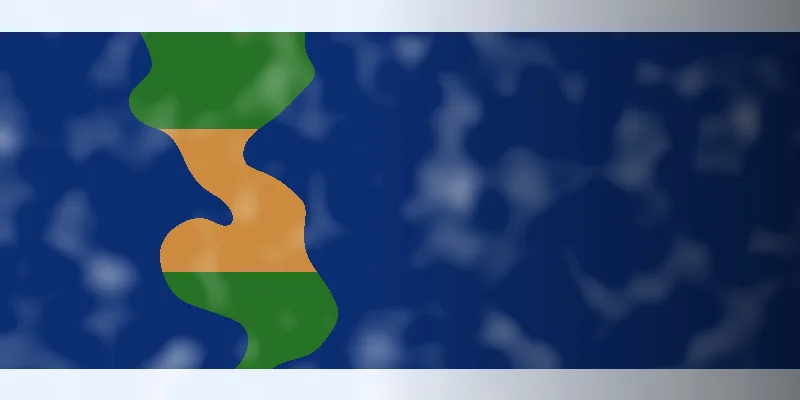

The Earth Information Jukebox
Hear the planet.
Spacoust turns NASA Earth images into music. AI reads what is happening in the scene, then the image's light and color become a melody you can listen to.

From pixels to music in three steps
No setup, no audio knowledge. Open an image from NASA's Earth Information Center, Worldview or Earth Observatory and press one button.
Open an image
Any satellite image or data map works: JPG, PNG, WebP or TIFF.
AI reads the scene
OpenAI vision describes what it sees, names the phenomenon (wildfire, hurricane, sea ice) and sets the mood and tempo.
Listen and save
Spacoust scans the image left to right and composes a piece you can play and export as a WAV file.
What you are hearing
The music is computed from the image itself, so the same image always produces the same piece. Nothing is random.
- Brightness
- Pitch of each note. Brighter column, higher note. Brighter image overall, faster tempo.
- Darkness
- Silence. The night side of Earth is heard as rests.
- Saturation
- Tone color. Vivid regions sound richer, pale regions purer.
- Edges
- Percussion. Coastlines, storms and fire fronts add rhythm.
- Red vs blue
- Stereo position. Warm areas lean one way, cool areas the other.
Major pentatonic
Vegetation, growth
0 · 2 · 4 · 7 · 9
Minor pentatonic
Oceans, water
0 · 3 · 5 · 7 · 10
Phrygian
Heat, fire, desert
0 · 1 · 3 · 5 · 7 · 8 · 10
Dorian
Ice, clouds
0 · 2 · 3 · 5 · 7 · 9 · 10
The dominant color picks the scale. Numbers are semitones above the key note.
Install
- Download Spacoust.exe. If your browser warns about the file, choose Keep.
- Double-click it. Windows may show “Windows protected your PC” because the app is new and unsigned. Click More info, then Run anyway.
- The first launch takes 5 to 10 seconds. Then click Open image and Analyze & Sonify.
Requirements
- System
- Windows 10 or 11, 64-bit
- Internet
- Needed for the AI analysis
- Space
- About 150 MB
- Install
- None. It runs as a single file.